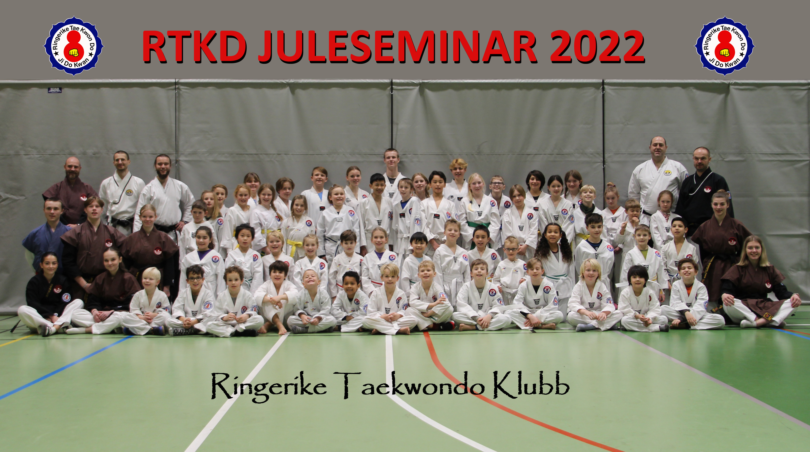
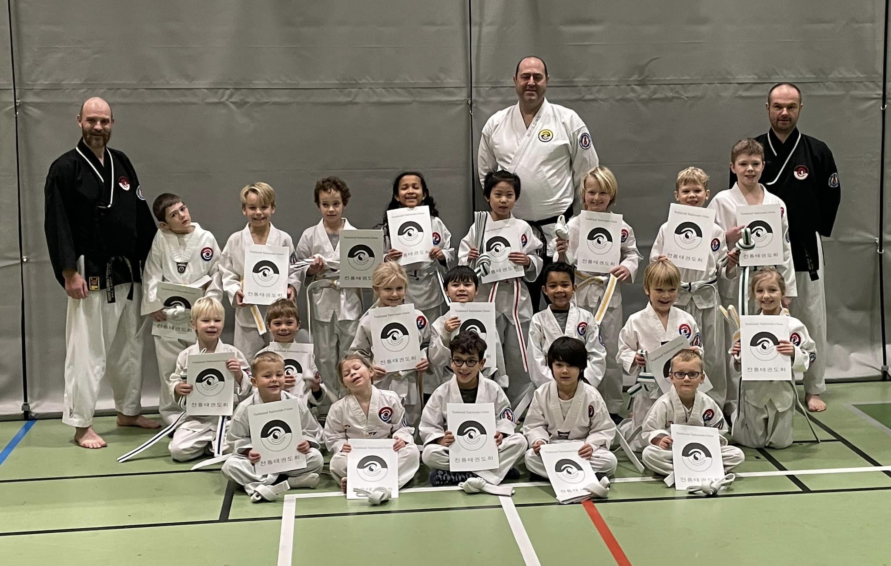
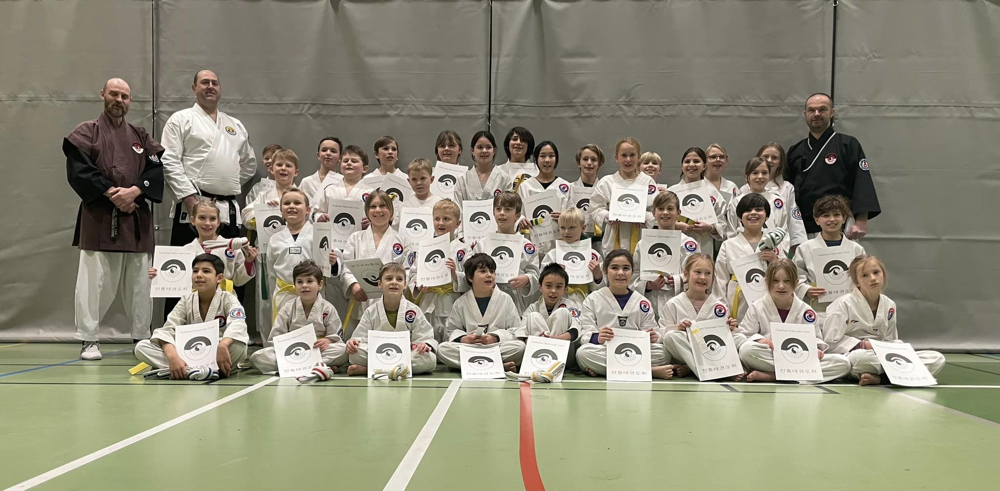
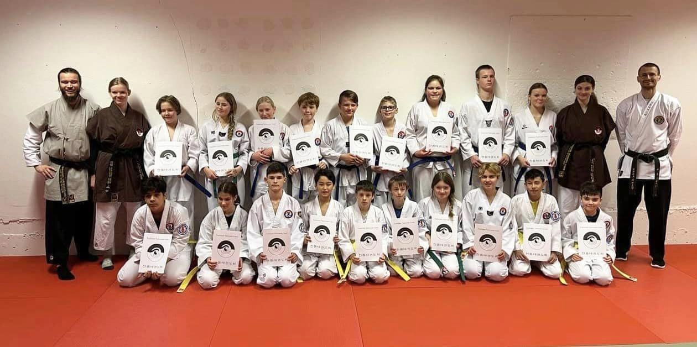
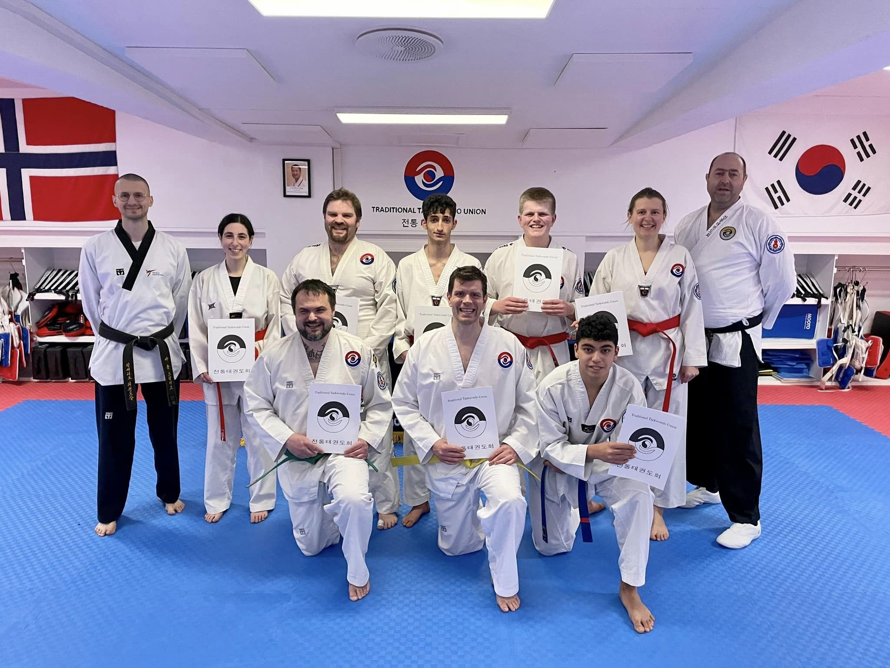

Innlegg
Nok et vellykket Juleseminar etter koronapause

17-19. desember arrangerte klubben vår tradisjonelle julecamp etter noen års pause grunnet koronarestriksjoner.
Vi har gledet oss til denne helgen, og etter mange treninger og god innsats, kan vi gratulere alle på tiger-, barn- og ungdomsgruppa med en vel gjennomført gradering. I tillegg vil vi gratulere de på voksen-gruppa som graderte og besto teoriprøva! Helgen startet på lørdag formiddag med trening for alle gruppene, også pause med frukt, saft og boller etterpå. Her var det også mulighet til å kjøpe seg noe ekstra godt i kiosken, så takk til alle som bidro med kake! Etter en liten pause var det enda en trening før kveldens program begynte! Her var det duket for pizza, og etter hvert både speed-breaking og poomse-konkurranse. Dette var veldig gøy for barna, da det var både pokaler, medaljer og gaveposer til vinnerne.I tillegg hadde våre sortbelter en rekke oppvisninger med både poomse, kyeongdang, plankeknekking og avtalt kamp.
Etter konkurransene fortsatte kvelden med besøk fra taekwondo-nissen, som hadde med godteri til alle! De som ville kunne se på film før det ble sagt god natt.
På søndag startet dagen med trening for barn og ungdom, og gradering for tiger.Gratulerer til alle på tigergruppa med nytt belte!

Når tigerne hadde dratt, var det tid for barne- og ungdomsgruppa sin gradering. Her var det mye bra å se...Vi vil gratulere alle med enten ny stripe eller nytt belte!


Vi vil takke for en minnerik helg etter et par års pause. I tillegg vil vi takke alle deltakerne for innsatsen gjennom hele helgen, og ikke minst foreldre og bekjente som bidro til kiosken og andre ting.